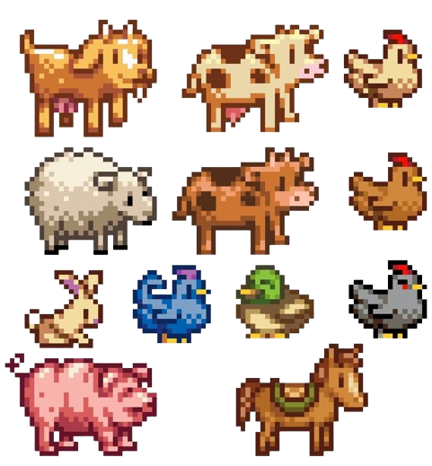
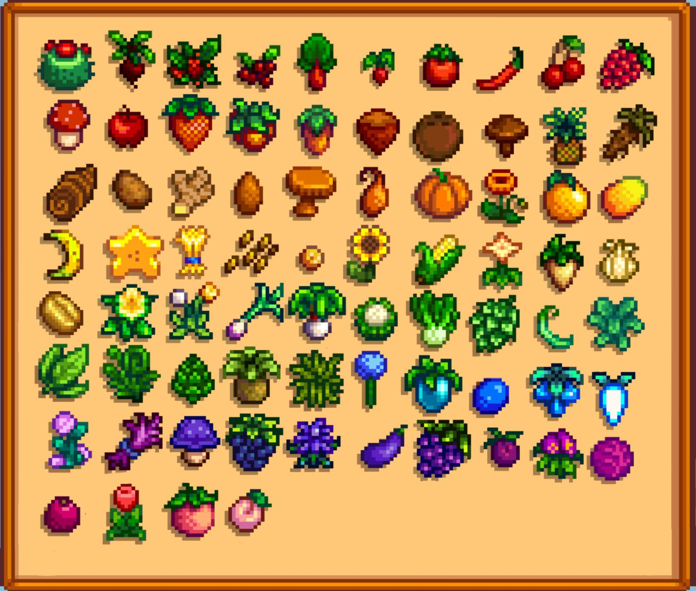
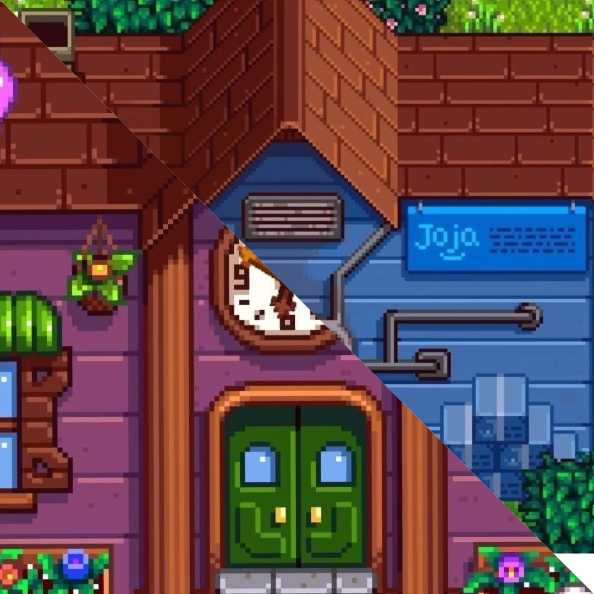

Granny's Guide to Stardew Valley
The Ins and Outs of a 'Simple' Farming Game
Confused about Stardew Valley? Don't fret, Granny's got you! Welcome to Granny's Guide to Stardew Valley, your ultimate resource for everything you need to thrive in the valley. Whether you're just stepping off the bus for the first time or a seasoned farmer looking for new strategies, Granny is here to help!
From picking the best seasonal crops and raising the happiest farm animals to mastering the art of fishing, mining, and foraging, this guide covers all aspects of the game. Looking to restore the Community Center and complete its bundles for magical rewards? Or maybe you're considering a more corporate route by siding with JojaMart? Granny has tips for both!
You'll also find guides on upgrading tools, exploring new areas, and tackling endgame achievements like reaching perfection. Whether you're chasing high profits, making friends with the villagers, or just looking for a relaxing farming experience, Granny's got the wisdom you need.
So grab your hoe and watering can—adventure awaits in Stardew Valley!
Animals
Farm animals in Stardew Valley provide a plethora of different resources, from eggs and milk to wool and truffles, in addition to a steady source of income. Whether you're raising chickens, cows, ducks, or even dinosaurs, Granny will teach you how to take care of them!
Seasonal Crops
Each season in Stradew Valley offer new opportunities for farming, and it's important to plan ahead for a successful year of farming. Granny will tell you all about her favorites for maximizing profits, as well as essential ingredients for cooking and necessities for the bundles in the Community Center!
JojaMart or Community Center?
Will you restore Pelican Town's heart buy completing the Community Center bundles, or will you join JojaMart and take the corporate route? The different choices offer different rewards and gameplay experiences. Whatever you choose to do, Granny is here to help!